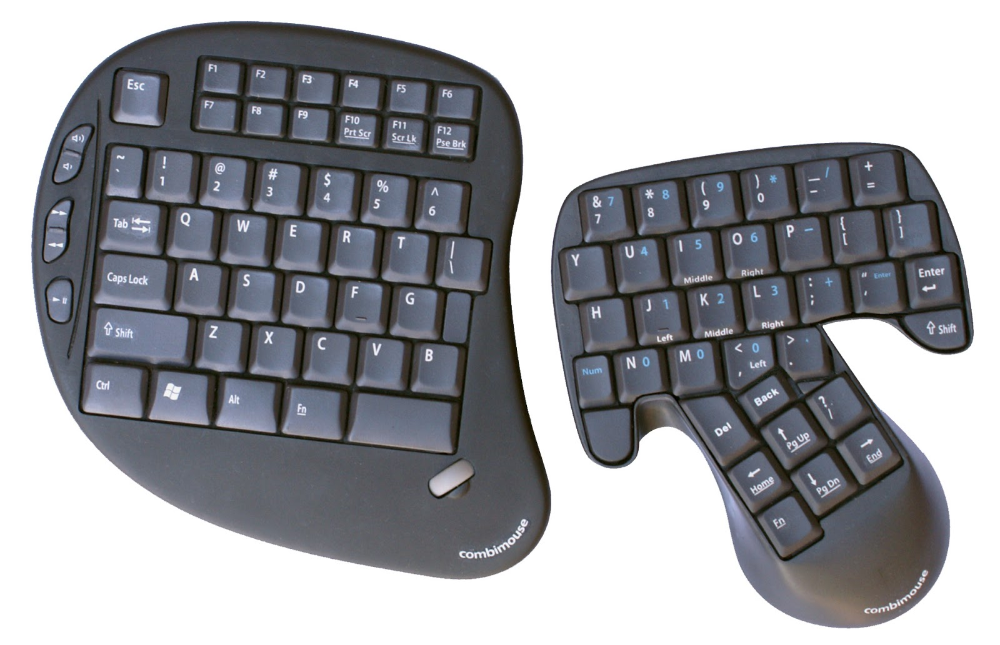

2. Klockenberg
Penggunaan keyboard sebelumnya yang mengakibatkan beberapa bagian tubuh menjadi ngilu seperti tangan dan bahu, membuat keyboard Klockenberg terlahir. Fungsi utamanya sebenarnya hanya untuk menyederhanakan keyboard sebelumnya. Dari segi bentuk, memanglah lebih kecil bila dibandingkan dengan keyboard qwerty. Sedangkan untuk tombol-tombolnya tersusun sama, perbedaannya penyusunannya mengandalkan pemisahan dengan sudut sekitar 15 derajat dengan kemiringan yang diarahkan ke bawah. Spesifikasinya yakni dengan komponen yang lebih ditipiskan sehingga mampu mengurangi tugas otot ketika harus menahan tubuh saat mengetik penggunaan keyboard ini akan membuat penggunanya lebih merasa nyaman karena otot menjadi rileks.
